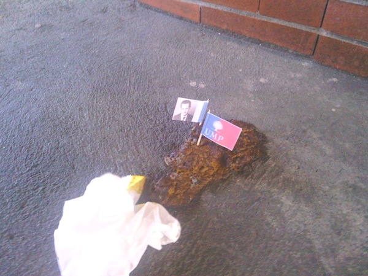

Caca Flag!
Un nouveau support de campagne électorale
Présidentielles 2012
Téléchargez:
Drapeaux PS | Drapeaux UMP
Bonus : Drapeaux FN

Un nouveau support de campagne électorale
Téléchargez:
Drapeaux PS | Drapeaux UMP
Bonus : Drapeaux FN